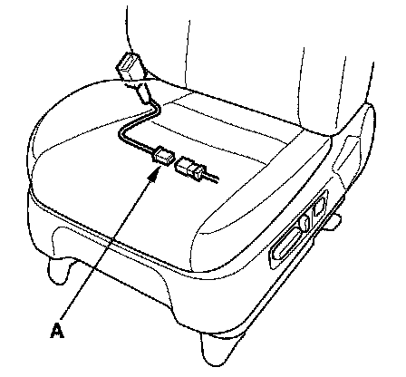
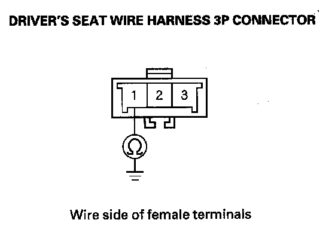

DTC 61-1x
DTC 61-1x ("x" can be 0 thru 9 or A thru F): Open in Driver's Seat Belt Buckle SwitchNOTE: Before doing this troubleshooting procedure, review SRS Precautions and Procedures.
1. Erase the DTC memory.
2. Turn the ignition switch ON (II), then buckle and unbuckle the driver's seat belt several times.
3. Read the DTC.
Is DTC 61-1x indicated?
YES - Go to step 4.
NO - Intermittent failure, the system is OK at this time. Go to Troubleshooting Intermittent Failures. If another DTC is indicated, go to the DTC Troubleshooting Index.

4. Disconnect the driver's seat harness 3P connector from the driver's seat belt buckle switch 3P connector (A).
5. From the system selection menu on the HDS, select SRS, then select SRS again, then select PARAMETER INFORMATION, then Buckle Switch. Seat Position Sensor, and check the status on the HDS screen for FRONT LEFT SEAT BELT BUCKLE SWITCH when the seat belt is buckled, and unbuckled.
- If UNBUCKLE, BUCKLE, or SHORT is indicated replace the driver's seat wire harness, or floor wire harness; replace the faulty harness.
- If OPEN is indicated, go to step 6.

6. Measure the resistance between the No. 1 terminal of the driver's seat wire harness 3P connector and body ground. There should be 0 - 1 ohm.
Is the resistance as specified?
YES - Go to step 7.
NO - Open in the driver's seat wire harness or floor wire harness or poor ground connection at G602. If G602 is OK, replace the faulty harness.
7. Alternatively connect the No. 2 and No. 3 terminals of the driver's seat wire harness 3P connector to body ground with a jumper wire, and check the status on the HDS screen.
Does the status alternate from UNBUCKLE to BUCKLE?
YES - Replace the driver's seat belt buckle assembly, then clear the DTC.
NO - Open in the driver's seat wire harness or floor wire harness; replace the faulty harness.